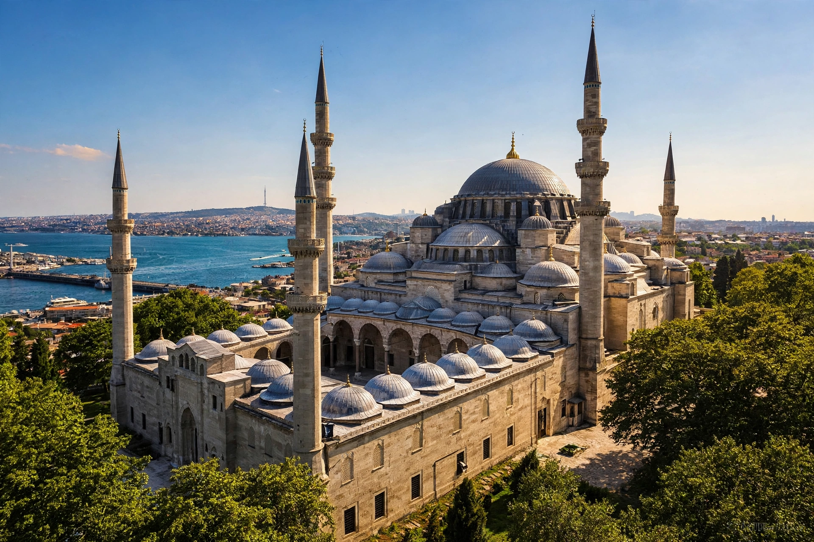

| Ottoman architecture | |
|---|---|
| Period | 14th – early 20th century |
| Key figure | Mimar Sinan (c. 1488–1588) |
| Hallmarks | Central domes, pencil minarets, külliye complexes, İznik tiles |
| Landmarks | Süleymaniye and Selimiye mosques, Topkapı Palace |
Ottoman architecture is the building tradition of the Ottoman Empire, developed over six centuries across three continents. Drawing on Byzantine, Persian, Mamluk and Seljuk precedents, it achieved a distinctive synthesis whose supreme expression is the great domed imperial mosque surrounded by its charitable complex (külliye).

Early Ottoman mosques in Bursa and İznik experimented with single and multiple domes. The conquest of Constantinople in 1453 exposed Ottoman builders to the challenge of Hagia Sophia, whose vast dome on pendentives became the benchmark. The classical age (c. 1450–1700) culminated in Mimar Sinan, chief royal architect for fifty years, whose Şehzade and Süleymaniye mosques in Istanbul and the Selimiye Mosque in Edirne — whose dome, over 31 metres across, he considered his masterpiece — perfected the cascading system of dome, half-domes and buttress turrets that dissolved the wall into light.
Imperial mosques anchor a külliye of madrasas, hospitals, soup kitchens, baths, caravanserais and the founder's tomb, all sustained by waqf endowment. Interiors glow with İznik tilework and calligraphy. Later centuries brought the Tulip Period's ornament, Ottoman Baroque (as in the Nuruosmaniye Mosque) and 19th-century eclecticism (Dolmabahçe Palace).
From the Balkans to Arabia, Ottoman domes and pencil minarets still structure city skylines, and Sinan's structural solutions influenced architects far beyond the empire's borders.
Mimar Sinan · Madrasa · Islamic architecture · Selimiye Mosque